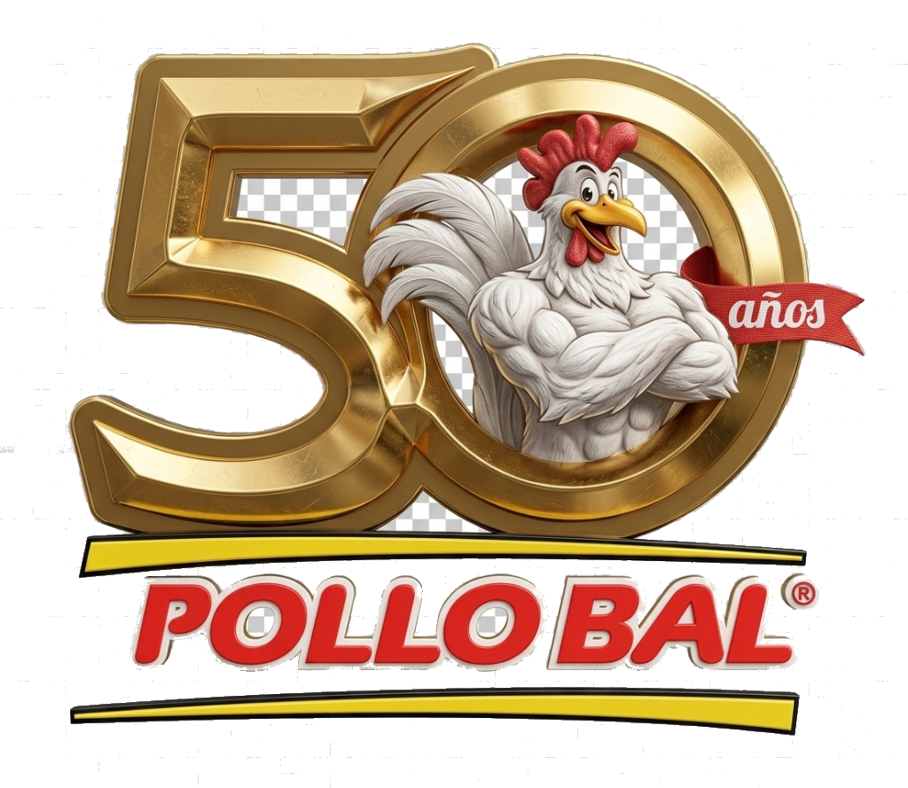
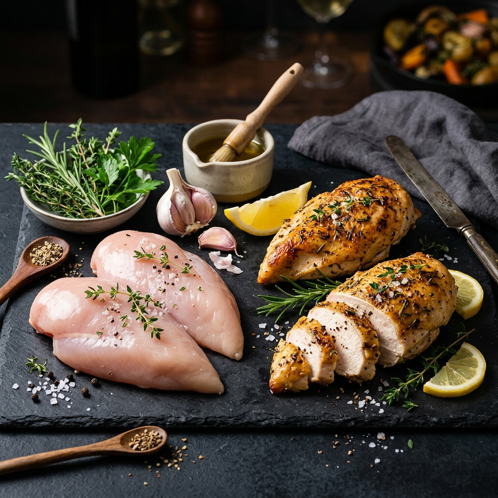
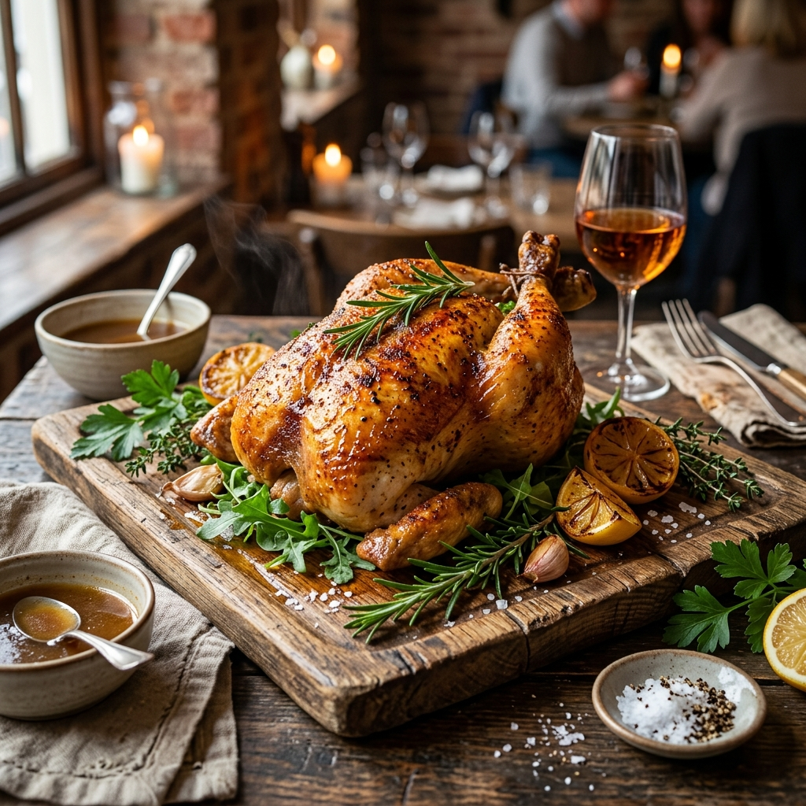
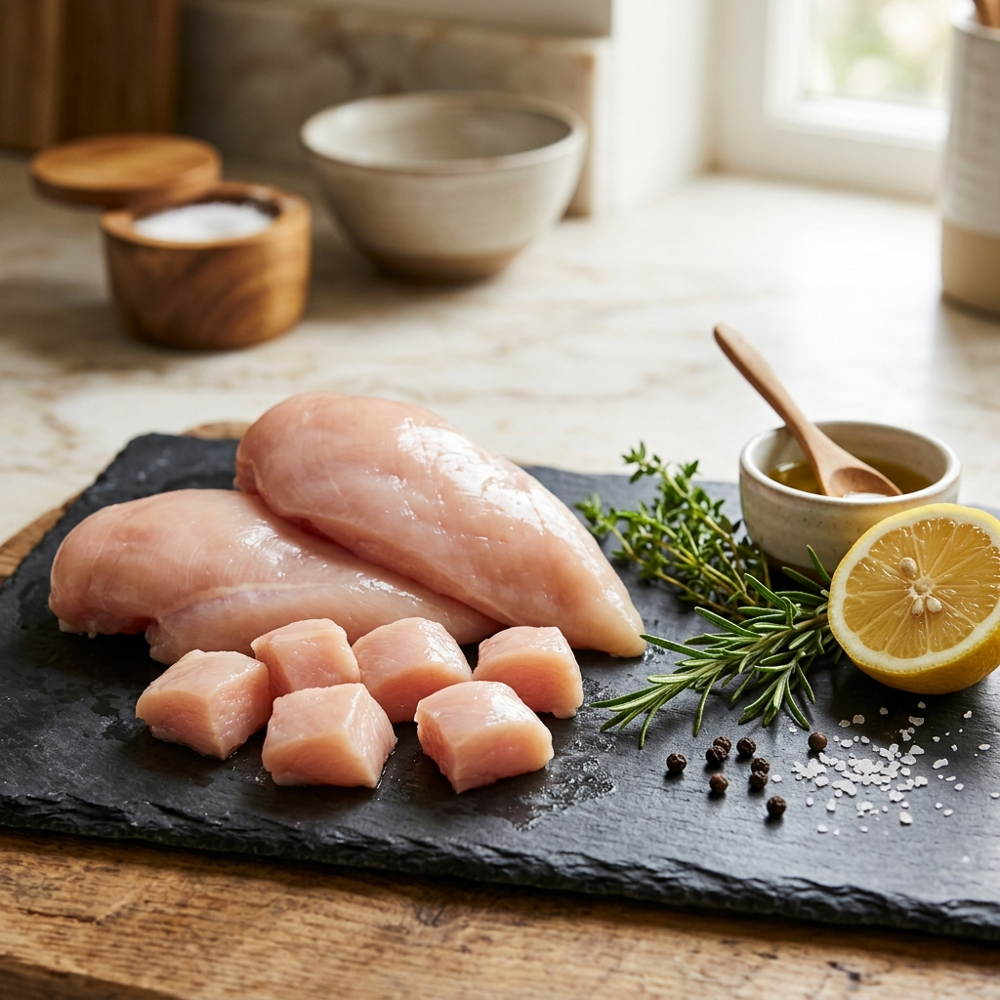
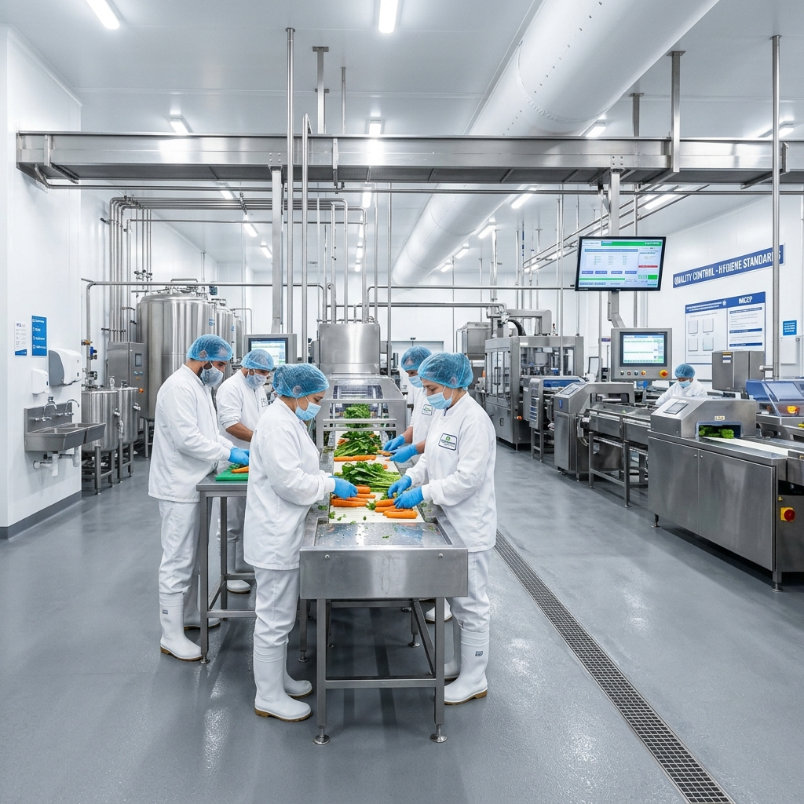

Calidad, Frescura y Confianza que Impulsan tu Negocio
Desde 1976, **Pollo Bal** es el gigante en distribución y venta de carne de pollo en Lázaro Cárdenas. Suministramos con absoluta higiene y frescura a los principales hoteles, restaurantes, banquetes y hogares de la región.

El Gigante del Pollo en Michoacán
Nuestra solidez no se improvisa: se ha forjado a lo largo de décadas de trabajo arduo, logística impecable y una reputación intachable basada en la máxima calidad y confianza.
Infraestructura de Escala
Contamos con centros de distribución avanzados equipados con tecnología de conservación de última generación en la Zona Industrial de Lázaro Cárdenas, Michoacán.
Logística Impecable
Nuestra flotilla de transporte refrigerado especializada asegura que la cadena de frío nunca se interrumpa, entregando pollo con frescura de granja directamente en tu puerta.
Socio Comercial Confiable
Somos el aliado estratégico de las cadenas hoteleras y restaurantes más exigentes de la costa de Michoacán, garantizando abasto constante y estricto control de higiene.
Nuestra Evolución en el Tiempo
Nuestros Productos
Seleccionamos y procesamos cada pieza bajo estándares de higiene militar. Frescura inigualable que tus clientes saborearán al instante.

Pollo Tipo Rosticero
Pollo entero especialmente calibrado en peso y tamaño exacto para rosticerías y restaurantes. Limpio, fresco y sin vísceras.
Pedir por WhatsApp
Pollo Troceado
Piernas, muslos, pechugas y piezas clasificadas y cortadas según tus necesidades comerciales.
Pedir por WhatsAppPechugas en Cortes
Pechugas de pollo premium frescas de granja, fileteadas o deshuesadas a la medida.
Pedir por WhatsAppPollo Vivo (Distribución)
Suministro mayorista de pollo vivo directamente de granjas asociadas bajo los más estrictos controles de bioseguridad en transporte.
Pedir por WhatsApp
Higiene Absoluta e Inocuidad Alimentaria
Sabemos que la salud de tus clientes y de tu familia es lo más importante. Por eso en **Pollo Bal** implementamos controles de sanidad sumamente rigurosos en cada fase del proceso:
-
🥩 Selección de Granjas de Élite
Trabajamos únicamente con granjas que cumplen con rigurosas certificaciones sanitarias y de alimentación orgánica.
-
❄️ Cadena de Frío Ininterrumpida
Desde el momento del procesamiento hasta la entrega en tu negocio, el producto se mantiene en temperaturas óptimas controladas por sensores avanzados.
-
🧼 Protocolo de Desinfección Militar
Nuestras instalaciones industriales se desinfectan profundamente diariamente siguiendo normativas de inocuidad alimentaria internacionales.
Inicia tu Cotización al Instante
Hemos simplificado nuestro proceso. Llena el formulario con tus datos y tipo de requerimiento, y nuestro sistema generará un pedido pre-formateado directamente a nuestro canal de **WhatsApp corporativo** para atenderte en minutos.
Formulario de Pedido y Cotización
Envío directo y exclusivo a WhatsApp
Nuestras Sucursales e Instalaciones
Visítanos en cualquiera de nuestras sucursales y comprueba la insuperable frescura y atención que nos han hecho líderes por medio siglo.
Planta Distribuidora Central
Operaciones y MayoreoAv. Ejército Mexicano No. 77, Col. Zona Industrial, Lázaro Cárdenas, Michoacán.
Sucursal Centro Quintana Roo
Expendio al PúblicoCalle Andrés Quintana Roo No. 37, Col. Centro, Lázaro Cárdenas, Michoacán.